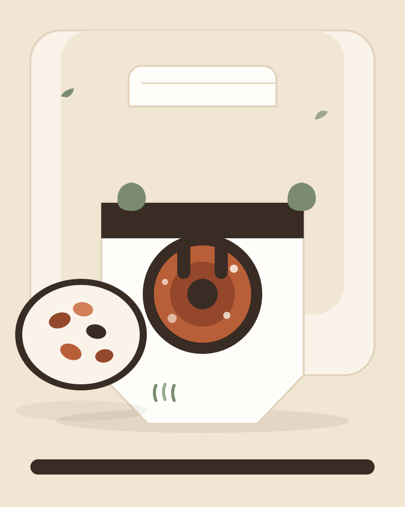
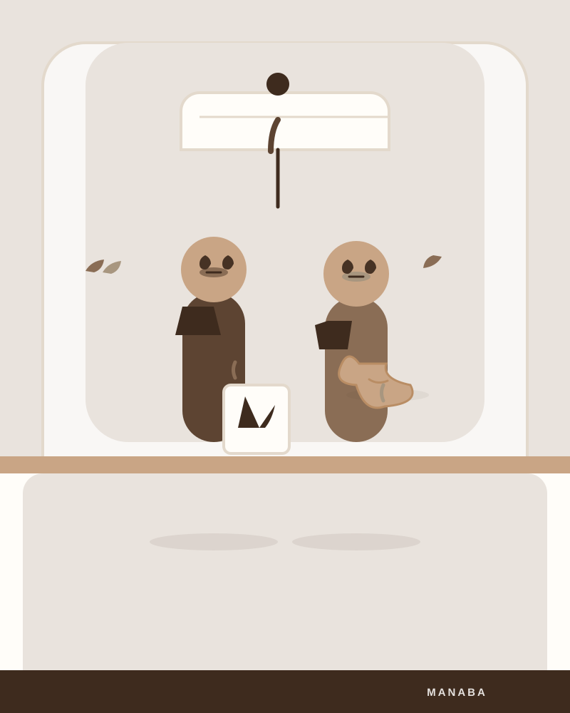

2021
El primer local
Abrimos en Palermo con una barra, una vitrina y muchas ganas de hacer las cosas bien.
Somos un equipo que cree en el café bien hecho, la comida honesta y los lugares donde uno elige quedarse.
Cada grano que servimos pasó por nuestra tostadora en lotes pequeños. Trabajamos con productores que cuidamos de conocer por nombre, y buscamos que ese trabajo se sienta en cada taza.
La panadería también es nuestra: masa madre fermentada en frío, medialunas horneadas a la mañana y recetas que cambian con la estación.

Trabajamos directo con productores y pagamos mejor por mejor café.
Lotes pequeños, tostado reciente y calibrar cada perfil por estación.
Un lugar para el barrio, donde conocerse y charlar, no solo consumir.
Compost, bolsas que se devuelven y proveedores locales de cercanía.
2021
Abrimos en Palermo con una barra, una vitrina y muchas ganas de hacer las cosas bien.
2023
Compramos la primera tostadora y empezamos a tostar nuestros propios lotes.
2025
Sumamos nuestra red de restaurantes y cafeterías que sirven nuestro café.

Somos baristas, panaderos y amantes de lo lento. Si tenés ganas de conocernos, pasá por el local o escribinos: el café se toma mejor en compañía.
Escribinos